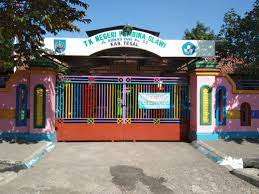
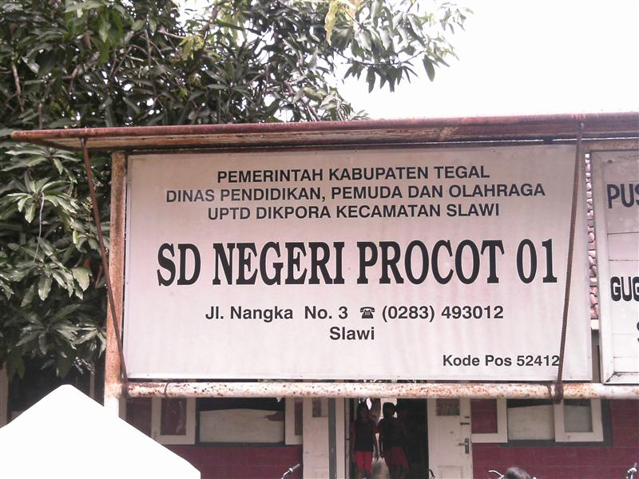
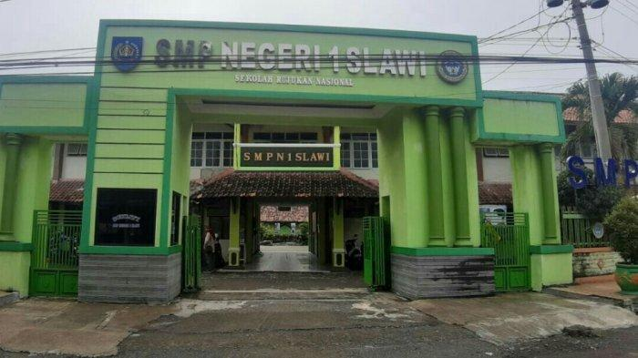
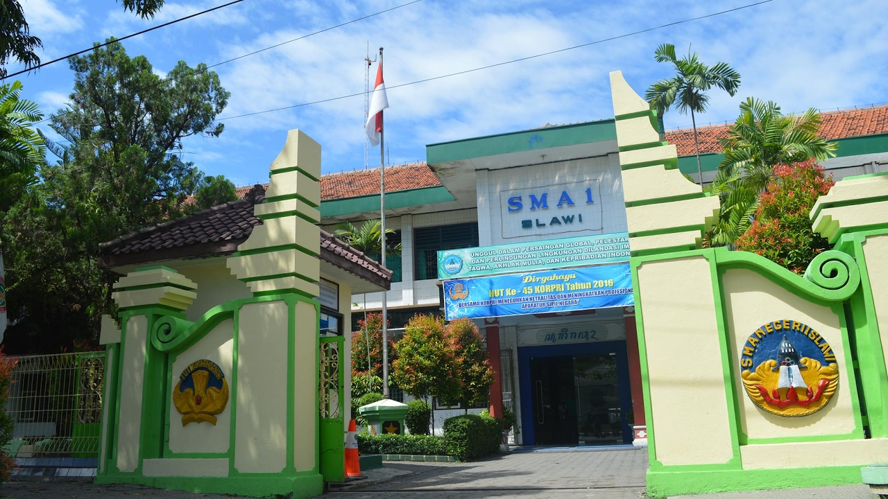
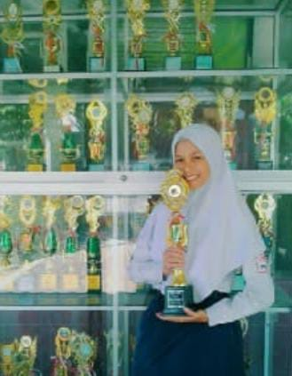
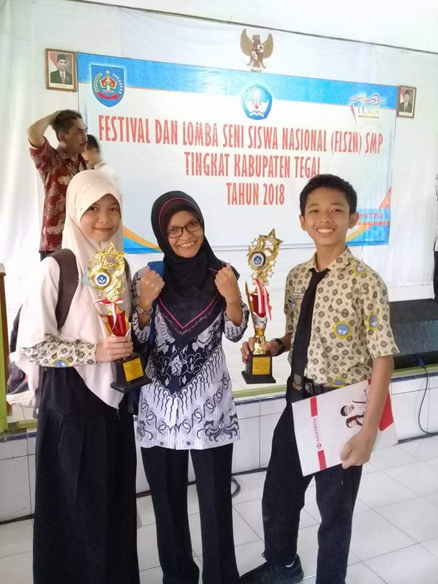
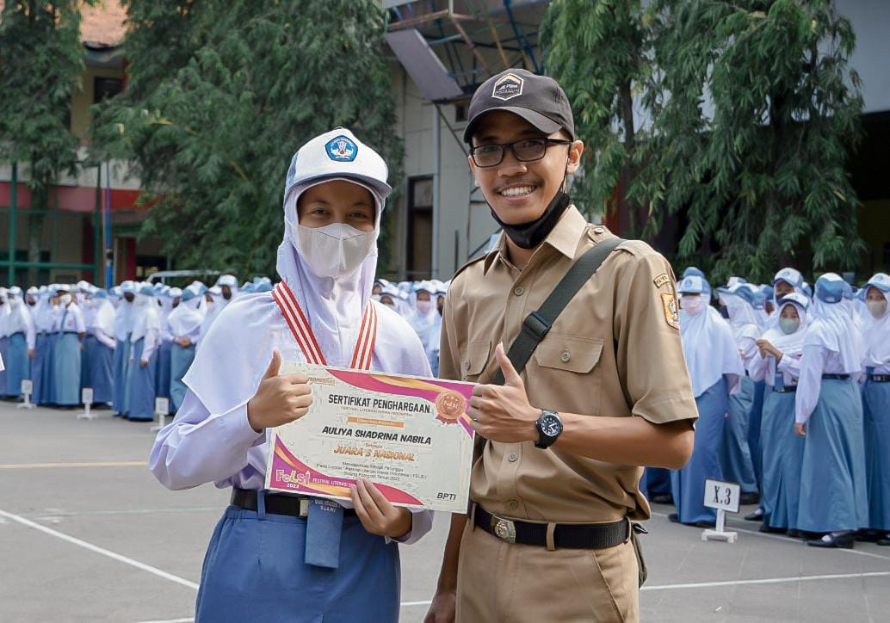

Profil

| Nama Lengkap |
: Auliya Shadrina Nabilah |
| Nama Panggilan |
: Auliya |
| Tempat, Tanggal Lahir |
: Tegal, 7 Juni 2005 |
| Golongan Darah |
: B |
| Agama |
: Islam |
| Kewarganegaraan |
: Indonesia |
| Alamat |
: Jl. Ahmad Yani No.15, Kab. Tegal, Jawa Tengah |
| Status |
: Mahasiswa |
| NIM |
: A11.2023.15205 |
| Prodi/Jurusan |
: Teknik Informatika |
| Hobi |
: Fotografi, desain grafis, menari |
Riwayat Pendidikan
TK PEMBINA

TK Negeri Pembina merupakan sekolah yang terletak di Jl. A. Yani
No. 52, Procot, Kec. Slawi, Kab. Tegal, Jawa Tengah. Saya
bersekolah di sini selama 2 tahun yaitu 2010 - 2011.
SDN PROCOT 01

SDN Procot 01 merupakan sekolah yang terletak di Jl. Nangka No.3,
Procot, Kec. Slawi, Kab. Tegal, Jawa Tengah. Saya bersekolah di
sini selama 6 tahun yaitu 2011 - 2017.
SMPN 1 SLAWI

SMPN 1 Slawi merupakan sekolah yang terletak di Jl. Prof. Moh.
Yamin No.32, Pakembaran, Kec. Slawi, Kab. Tegal, Jawa Tengah. Saya
bersekolah di sini selama 3 tahun yaitu 2017 - 2020.
SMAN 1 SLAWI

SMAN 1 Slawi merupakan sekolah yang terletak di Jl. KH. Wahid,
Hasyim No.1, Pakembaran, Kec. Slawi, Kab. Tegal, Jawa Tengah. Saya
bersekolah di sini selama 3 tahun yaitu 2020 - 2023.
UNIVERSITAS DIAN NUSWANTORO

Universitas Dian Nuswantoro merupakan kampus yang terletak di Jl.
Imam Bonjol No.207, Pendrikan Kidul, Semarang Tengah, Kota
Semarang, Jawa Tengah. Saat ini saya sedang melanjutkan
pendidikanku di Universitas Dian Nuswantoro jurusan Teknik
Informatika.
Prestasi
Berikut merupakan prestasi-prestasi yang pernah saya raih :
JUARA 1 TIKI PUTRI MAPSI

Pada tahun 2016, tepatnya saat saya menduduki bangku kelas 6 SD,
saya mendapatkan juara 1 TIKI Putri MAPSI tingkat kecamatan. TIKI
sendiri merupakan cabang perlombaan mengetik salah satu surah
menggunakan aplikasi "Nonosoft".
JUARA 3 DESAIN POSTER DIGITAL

Saya mendapatkan juara 3 desain poster digital tingkat kabupaten
saat saya menduduki bangku kelas 7 SMP pada tahun 2018. Ini
merupakan pertama kali saya terjun di dunia desain grafis dan
mengenal Corel Draw.
JUARA 3 FOTOGRAFI

Saya mendapatkan juara 3 fotografi tingkat nasional saat saya
menduduki bangku kelas 12 SMA pada tahun 2022. Saya baru menemukan
hobi fotografi saat saya menduduki bangku kelas 11 dan ingin
mengasah bakat saya dengan mengikuti perlombaan.